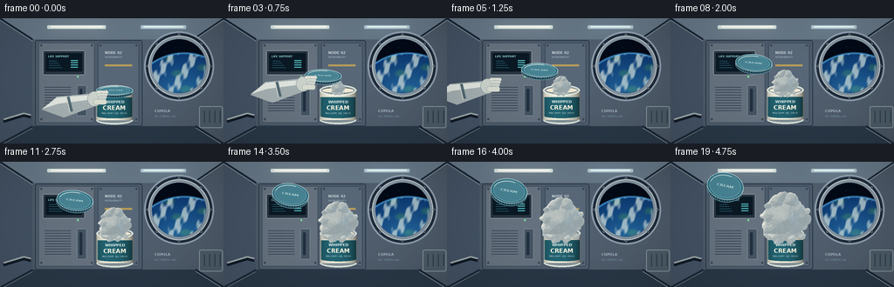
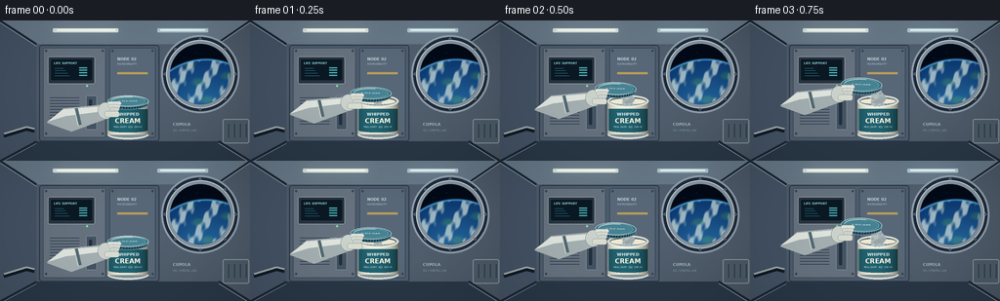
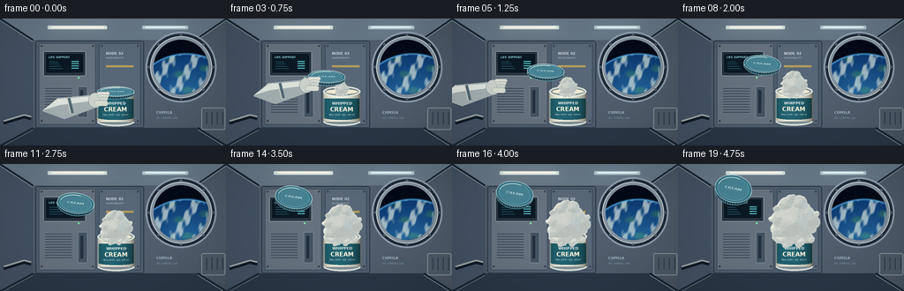
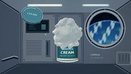

CODING AGENTS AS PIXEL WORLD MODELS
traex/GPT-6.1-Sol · mechanics_0006
点击播放 · 原生 RGB 像素
逐轮保存的候选
回放视频、检查图与代码变化。
每份候选均可单独播放。实际图片检查记录在下方工具轨迹中。
候选 01播放与检查图
点击播放 · 原生 RGB 像素


展开代码变化
--- 上一保存版本
+++ 本次保存版本
@@ -0,0 +1,294 @@
+from pathlib import Path
+import json, math
+import numpy as np
+from PIL import Image, ImageDraw, ImageFont, ImageFilter
+from scipy.ndimage import map_coordinates, gaussian_filter
+import artifact_io
+
+ROOT=Path(__file__).resolve().parent
+SPEC=json.loads((ROOT/'task_spec.json').read_text())
+S=3; W,H=256*S,144*S
+rng=np.random.default_rng(27)
+
+def font(size,bold=False):
+ p='/usr/share/fonts/truetype/dejavu/DejaVuSans'+('-Bold' if bold else '')+'.ttf'
+ return ImageFont.truetype(p,round(size*S))
+def drawline(d,coords,fill,width=1):
+ d.line([(int(x*S),int(y*S)) for x,y in coords], fill=fill,width=max(1,int(width*S)))
+def ellipse(d,b,fill,outline=None,width=1):
+ d.ellipse(tuple(int(v*S) for v in b),fill=fill,outline=outline,width=max(1,int(width*S)))
+def rect(d,b,fill,outline=None,width=1,r=0):
+ b=tuple(int(v*S) for v in b)
+ if r:d.rounded_rectangle(b,radius=int(r*S),fill=fill,outline=outline,width=max(1,int(width*S)))
+ else:d.rectangle(b,fill=fill,outline=outline,width=max(1,int(width*S)))
+def poly(d,pts,fill):d.polygon([(int(x*S),int(y*S)) for x,y in pts],fill=fill)
+def text(d,xy,s,size,fill,bold=False,anchor=None):d.text((xy[0]*S,xy[1]*S),s,font=font(size,bold),fill=fill,anchor=anchor)
+
+# A detailed, softly lit orbital-station interior, drawn only with local geometry.
+yy,xx=np.mgrid[:H,:W]; xf=xx/S; yf=yy/S
+v=0.90-0.18*((xf-140)/190)**2-0.18*((yf-64)/120)**2
+base=np.stack([v*75+15,v*87+18,v*102+20],axis=-1)
+base+=rng.normal(0,.5,(H,W,1))
+bg=Image.fromarray(np.uint8(np.clip(base,0,255)))
+d=ImageDraw.Draw(bg)
+poly(d,[(0,0),(256,0),(221,24),(37,24)],(102,119,134))
+poly(d,[(0,0),(37,24),(37,124),(0,144)],(67,82,100))
+poly(d,[(0,144),(37,124),(224,124),(256,144)],(41,55,70))
+for a,b in [((0,0),(37,24)),((256,0),(221,24)),((0,144),(37,124)),((256,144),(224,124))]:
+ drawline(d,[a,b],(27,39,54),2)
+ drawline(d,[(a[0],a[1]+2),(b[0],b[1]+2)],(144,158,163),.7)
+rect(d,(40,25,163,124),(77,92,108),(43,55,70),1,r=3)
+rect(d,(44,28,108,120),(102,114,127),(59,73,86),.7,r=2)
+rect(d,(112,28,159,120),(89,104,120),(49,65,82),.7,r=2)
+for x in [47,105,115,156]:
+ for y in [31,116]:
+ ellipse(d,(x-1,y-1,x+1,y+1),(38,48,60))
+ drawline(d,[(x-.6,y),(x+.6,y)],(150,165,174),.4)
+# Light bars overhead and low under-panel illumination.
+rect(d,(54,8,121,12),(204,219,218),r=1)
+rect(d,(58,9,118,10.5),(255,253,236),r=.5)
+rect(d,(161,8,213,12),(170,194,202),r=1)
+rect(d,(164,9,210,10.5),(233,246,246),r=.5)
+# Computer panel and recognizable spaceflight fixture details.
+rect(d,(49,37,97,65),(41,53,65),(151,166,174),.8,r=2)
+rect(d,(52,40,94,61),(10,25,36),r=1)
+text(d,(55,42),'LIFE SUPPORT',3.1,(151,212,220),True)
+for k in range(4):
+ drawline(d,[(56,49+k*2.6),(65+k*2,49+k*2.6)],(67,157,178),.6)
+ rect(d,(81,48+k*2.6,89,49+k*2.6),(77,171,176))
+ellipse(d,(88,66,90,68),(125,229,160))
+for y in range(79,108,3):drawline(d,[(51,y),(81,y)],(44,58,74),.9)
+rect(d,(88,77,99,112),(69,84,99),(127,141,151),.7,r=1)
+rect(d,(91,81,94,107),(33,47,62),r=1)
+text(d,(120,37),'NODE 02',3.9,(201,214,220),True)
+text(d,(120,43),'MICROGRAVITY',2.6,(163,185,197))
+rect(d,(120,53,151,55),(182,157,91))
+for y in [93,99,105]:
+ rect(d,(120,y,150,y+3),(54,70,86),r=.7)
+ rect(d,(122,y+1,130,y+1.5),(125,151,163))
+# A substantial layered porthole, with the Earth beyond.
+ellipse(d,(165,15,245,95),(31,43,58),(142,157,172),2)
+ellipse(d,(170,20,240,90),(132,148,161),(199,209,210),1)
+ellipse(d,(174,24,236,86),(23,33,45),(60,76,91),2)
+ww=62*S; hh=62*S
+py,px=np.mgrid[:hh,:ww]; u=px/S; v2=py/S
+sky=np.zeros((hh,ww,3),float); sky[:]=[3,10,23]
+# Curved Earth limb, atmospheric haze and layered clouds.
+ecx,ecy,er=37,81,65
+dist=np.sqrt((u-ecx)**2+(v2-ecy)**2)
+earth=dist<er
+q=np.clip((er-dist)/40,0,1)
+cloud=(np.sin(u*.23+v2*.15)+.55*np.sin(u*.53-v2*.16)+.32*np.sin(u*.84+v2*.46))
+cloud=np.clip((cloud-.1)*1.1,0,1)*.75
+land=np.clip(np.sin(u*.19-v2*.1)+np.sin(v2*.31+u*.07)-.8,0,1)
+ecol=np.stack([12+22*q+land*17,57+42*q+land*25,113+41*q-land*13],-1)
+ecol=ecol*(1-cloud[...,None])+np.array([204,222,221])*cloud[...,None]
+sky[earth]=ecol[earth]
+ha=np.exp(-((dist-er)/1.0)**2)[...,None]
+sky=sky*(1-ha*.72)+np.array([87,183,250])*ha*.72
+for sx,sy in [(7,5),(27,9),(42,3),(55,12),(14,14)]:
+ if not earth[int(sy*S),int(sx*S)]:sky[int(sy*S),int(sx*S)]=[191,211,228]
+win=Image.fromarray(np.uint8(np.clip(sky,0,255)))
+mask=Image.new('L',(ww,hh)); md=ImageDraw.Draw(mask);md.ellipse((0,0,ww-1,hh-1),fill=255)
+bg.paste(win,(174*S,24*S),mask)
+d=ImageDraw.Draw(bg)
+for ang in np.linspace(0,2*np.pi,8,endpoint=False):
+ x=205+36*math.cos(ang); y=55+36*math.sin(ang)
+ ellipse(d,(x-1.2,y-1.2,x+1.2,y+1.2),(39,54,69),(179,191,197),.4)
+ drawline(d,[(x-.5,y-.3),(x+.5,y+.3)],(149,168,180),.35)
+# Equipment bay to the right and receding handrail.
+rect(d,(228,101,255,126),(75,91,103),(133,147,154),1,r=2)
+for x in [234,240,246,252]:drawline(d,[(x,106),(x,120)],(41,58,72),1)
+drawline(d,[(4,118),(27,111),(35,113)],(16,26,38),4)
+drawline(d,[(4,116),(27,109),(35,111)],(155,166,167),2)
+text(d,(177,104),'CUPOLA',4.1,(166,185,196),True)
+text(d,(177,111),'ISS / ORBITAL LAB',2.5,(121,149,166))
+# Broad faint light bloom over ceiling strips.
+glow=Image.new('RGB',(W,H));gd=ImageDraw.Draw(glow)
+rect(gd,(56,8,120,11),(57,51,35));rect(gd,(164,8,210,11),(28,41,45))
+glow=glow.filter(ImageFilter.GaussianBlur(7*S))
+bg=Image.fromarray(np.uint8(np.clip(np.asarray(bg).astype(float)+np.asarray(glow),0,255)))
+
+# An actual implicit 3-D whipped-cream volume: smooth union of unequal lobes.
+N=144; extent=1.52
+coords=np.linspace(-extent,extent,N,dtype=np.float32)
+Z,Y,X=np.meshgrid(coords,coords,coords,indexing='ij')
+sdf=np.full((N,N,N),10,dtype=np.float32)
+def add_ball(cx,cy,cz,r,k=.12):
+ global sdf
+ b=np.sqrt((X-cx)**2+(Y-cy)**2+(Z-cz)**2)-r
+ h=np.maximum(k-np.abs(sdf-b),0)/k
+ sdf=np.minimum(sdf,b)-h*h*k*.25
+add_ball(0,0,.08,.69,.18)
+# Uneven broad, folded foam lobes.
+for i in range(27):
+ z=1-2*(i+.5)/27; a=i*2.399963
+ rr=math.sqrt(1-z*z)
+ direction=np.array([rr*math.cos(a),z,rr*math.sin(a)])
+ center=direction*rng.uniform(.56,.79)
+ radius=rng.uniform(.22,.35)
+ add_ball(*center,radius,.15)
+# Smaller soft curls, not disconnected hard bubbles.
+for i in range(39):
+ z=1-2*(i+.5)/39; a=i*2.399963+.5; rr=math.sqrt(1-z*z)
+ v3=np.array([rr*math.cos(a),z,rr*math.sin(a)])
+ center=v3*rng.uniform(.80,.95)
+ add_ball(*center,rng.uniform(.095,.19),.09)
+# A small curved taper at the crown resembles aerated dairy folds.
+for i in range(10):
+ a=i*.19; add_ball(-.21+.17*math.sin(a),-.82-i*.020,-.30+.12*math.cos(a),.16-i*.008,.1)
+# Continuous small-scale wrinkling, with stable object-space texture.
+noise=gaussian_filter(rng.normal(size=sdf.shape).astype(np.float32),1.05)
+noise/=noise.std()
+sdf+=noise*.007
+sdf+=(np.sin(X*42+np.sin(Z*18))*np.sin(Y*37+Z*13))*.003
+step=2*extent/(N-1)
+gz,gy,gx=np.gradient(sdf,step)
+def sample(field,x,y,z):
+ pts=np.stack([(z+extent)/step,(y+extent)/step,(x+extent)/step])
+ return map_coordinates(field,pts,order=1,mode='constant',cval=2,prefilter=False)
+
+# Ray march the volume once at high resolution; all subsequent inflation is
+# a coherent object-space scale change, rather than independent frames.
+R=336
+sy,sx=np.mgrid[:R,:R].astype(np.float32)
+rx=(sx-(R-1)/2)/(R/2)*1.23
+ry=(sy-(R-1)/2)/(R/2)*1.23
+# The orthographic eye is above the suspended tub.
+angle=.12; ca=math.cos(angle); sa=math.sin(angle)
+x=rx.copy(); y=ry*ca+1.6*sa; z=ry*sa-1.6*ca
+active=np.ones((R,R),bool); hit=np.zeros((R,R),bool)
+for it in range(105):
+ idx=np.flatnonzero(active)
+ if not len(idx):break
+ xf1=x.flat[idx]; yf1=y.flat[idx]; zf1=z.flat[idx]
+ dis=sample(sdf,xf1,yf1,zf1)
+ reached=dis<.0025
+ hit.flat[idx[reached]]=True;active.flat[idx[reached]]=False
+ walk=idx[~reached]; amount=np.maximum(dis[~reached]*.78,.003)
+ y.flat[walk]-=amount*sa;z.flat[walk]+=amount*ca
+ active[z>1.5]=False
+ids=np.flatnonzero(hit)
+xv=x.flat[ids];yv=y.flat[ids];zv=z.flat[ids]
+norm=np.stack([sample(gx,xv,yv,zv),sample(gy,xv,yv,zv),sample(gz,xv,yv,zv)],-1)
+norm/=np.maximum(np.linalg.norm(norm,axis=-1,keepdims=True),1e-5)
+light=np.array([-.55,-.69,-.48]);light/=np.linalg.norm(light)
+nd=np.clip(norm@light,0,1)
+shadow=np.ones(len(ids))
+for dt in [.045,.09,.17,.29,.44]:
+ dd=sample(sdf,xv+light[0]*dt,yv+light[1]*dt,zv+light[2]*dt)
+ shadow=np.minimum(shadow,np.clip(dd/(dt*.5),.23,1))
+diff=nd*(.55+.45*shadow)
+# Ambient occlusion supplies soft depth between the foam's folds.
+ao=np.ones(len(ids))
+for dt in [.04,.09,.18]:
+ dd=sample(sdf,xv+norm[:,0]*dt,yv+norm[:,1]*dt,zv+norm[:,2]*dt)
+ ao-=np.clip((dt-dd)/dt,0,1)*.12
+micro=sample(noise,xv,yv,zv)
+fine=(np.sin(xv*143+yv*57)*np.sin(yv*165-zv*83)+np.sin(zv*153-xv*70))*.5
+pores=np.maximum(fine-.79,0)*12
+shade=np.clip((.32+.64*diff)*ao+micro*.015-pores*.020,0,1)
+low=np.array([126,143,151]);high=np.array([255,252,237])
+col=low[None,:]+(high-low)[None,:]*shade[:,None]
+rim=np.clip(norm@np.array([.82,-.1,-.45]),0,1)**5
+col+=rim[:,None]*np.array([5,12,18])
+# Broad velvety highlights, with no glass-like bubbles.
+half=light+np.array([0,sa,-ca]);half/=np.linalg.norm(half)
+sp=np.clip(norm@half,0,1)**21
+col+=sp[:,None]*9
+foam_arr=np.zeros((R,R,4),np.uint8);foam_arr.reshape(-1,4)[ids,:3]=np.uint8(np.clip(col,0,255));foam_arr.reshape(-1,4)[ids,3]=255
+foam=Image.fromarray(foam_arr,'RGBA')
+
+# Cylindrical dairy tub with a curved wrap-around label.
+def tub(cx,cy):
+ im=Image.new('RGBA',(W,H)); dd=ImageDraw.Draw(im)
+ x0=cx-21; x1=cx+21; top=cy; bottom=cy+34
+ # Rounded bottom and body.
+ ellipse(dd,(x0,bottom-5,x1,bottom+5),(129,143,150))
+ for x in np.arange(x0,x1,.333):
+ n=(x-cx)/21; sh=.49+.49*math.sqrt(max(0,1-n*n))-.12*n
+ color=tuple(int(k*sh) for k in [242,240,222])+(255,)
+ drawline(dd,[(x,top),(x,bottom)],color,.45)
+ # Teal label is curved in lighting and at its lower edge.
+ for x in np.arange(x0+.8,x1-.8,.333):
+ n=(x-cx)/21; root=math.sqrt(max(0,1-n*n));sh=.53+.48*root-.12*n
+ drawline(dd,[(x,top+8),(x,bottom-5+3*root)],tuple(int(k*sh) for k in [34,98,112])+(255,),.45)
+ text(dd,(cx,top+13),'WHIPPED',4.2,(232,242,237),True,'mm')
+ text(dd,(cx,top+20),'CREAM',6.5,(255,248,226),True,'mm')
+ text(dd,(cx,top+26),'REAL DAIRY ⢠200 ml',2.2,(185,213,211),False,'mm')
+ ellipse(dd,(x0,top-6,x1,top+6),(201,213,212),(251,251,235),.8)
+ ellipse(dd,(x0+2,top-4.3,x1-2,top+4.3),(67,74,74),(151,170,174),.8)
+ ellipse(dd,(x0+3.1,top-2.8,x1-3.1,top+3.1),(239,233,212))
+ # Lower rolled lip and fine side highlights.
+ dd.arc(tuple(int(v*S) for v in (x0,bottom-5,x1,bottom+5)),0,180,fill=(219,227,219),width=2*S)
+ drawline(dd,[(x0+1.2,top+5),(x0+1.2,bottom-1)],(193,204,200),.6)
+ return im
+
+def lid(cx,cy,t):
+ # A detached plastic screw lid slowly turning in microgravity.
+ lw=46*S; lh=46*S
+ im=Image.new('RGBA',(lw,lh)); dd=ImageDraw.Draw(im)
+ ratio=.28+.50*t
+ hh=40*S*ratio; xx=23*S; yy=23*S
+ dd.ellipse((xx-21*S,yy-hh/2+2*S,xx+21*S,yy+hh/2+3*S),fill=(23,61,77),outline=(97,145,159),width=2)
+ dd.ellipse((xx-21*S,yy-hh/2,xx+21*S,yy+hh/2),fill=(51,114,133),outline=(180,209,211),width=2)
+ dd.ellipse((xx-18.3*S,yy-hh*.43,xx+18.3*S,yy+hh*.43),fill=(72,131,147),outline=(109,164,174),width=2)
+ for k in range(23):
+ a=np.pi*(k/22)
+ px=xx+20.5*S*np.cos(a);py=yy+hh*.5*np.sin(a)
+ dd.line((px,py,px,py+2*S),fill=(151,181,185),width=1)
+ dd.arc((xx-18*S,yy-hh*.40,xx+18*S,yy+hh*.40),190,285,fill=(207,225,219),width=2)
+ # The modest embossed dairy mark rotates together with the lid.
+ mark=Image.new('RGBA',(36*S,11*S)); mm=ImageDraw.Draw(mark)
+ mm.text((18*S,5.5*S),'CREAM',font=font(5,True),fill=(178,213,214),anchor='mm')
+ mark=mark.resize((36*S,max(2,int(11*S*ratio))),Image.Resampling.LANCZOS)
+ im.alpha_composite(mark,(5*S,int(yy-mark.height/2)))
+ im=im.rotate(-12*t,resample=Image.Resampling.BICUBIC,expand=True)
+ return im,(int(cx*S-im.width/2),int(cy*S-im.height/2))
+
+# Astronaut glove pinches the cap initially, then leaves it floating.
+def hand(im,cx,cy,p):
+ dd=ImageDraw.Draw(im)
+ arm_end=cx-18
+ poly(dd,[(arm_end-65,cy+19),(arm_end-48,cy+4),(arm_end-6,cy+0),(arm_end+1,cy+13),(arm_end-40,cy+28)],(165,176,178))
+ poly(dd,[(arm_end-65,cy+18),(arm_end-48,cy+5),(arm_end-9,cy+2),(arm_end-7,cy+7),(arm_end-46,cy+12)],(224,230,223))
+ drawline(dd,[(arm_end-35,cy+4),(arm_end-31,cy+21)],(83,106,117),3)
+ drawline(dd,[(arm_end-37,cy+5),(arm_end-33,cy+22)],(211,216,205),1.2)
+ ellipse(dd,(arm_end-13,cy-2,arm_end+3,cy+15),(204,211,204),(108,127,137),.5)
+ # Four rounded fingers and a pinching thumb.
+ for k in range(3):
+ rect(dd,(arm_end-3+k*1.2,cy-3+k*3.1,arm_end+11-k,cy+1+k*3.1),(224-k*9,226-k*7,215-k*5),(139,154,157),.4,r=2)
+ drawline(dd,[(arm_end+3,cy-1+k*3),(arm_end+4,cy+1+k*3)],(169,181,177),.4)
+ rect(dd,(arm_end-6,cy+7,arm_end+9,cy+13),(217,221,209),(126,146,151),.5,r=2.4)
+
+frames=[]
+for i in range(SPEC['frames']):
+ t=i/(SPEC['frames']-1)
+ canvas=bg.convert('RGBA')
+ cx=131+.7*math.sin(t*1.5);top=83-.8*t
+ canvas.alpha_composite(tub(cx,top))
+ # Closed in the first frame; swelling starts after the seal is lifted.
+ grow=np.clip((i-1)/18,0,1)
+ if i>=1:
+ radius=8+36*grow**.92
+ fy=top-1-15*grow
+ sz=round(radius/1.23*2*S)
+ f=foam.resize((sz,sz),Image.Resampling.LANCZOS)
+ canvas.alpha_composite(f,(round(cx*S-sz/2),round(fy*S-sz/2)))
+ # The lid gently floats diagonally, independently of the growing foam.
+ openp=min(i/4,1)
+ lidcx=cx-69*(t**.76)
+ lidcy=top-54*(t**.64)
+ li,pos=lid(lidcx,lidcy,t)
+ canvas.alpha_composite(li,pos)
+ if i<7:
+ retreat=max(0,(i-3)/3)
+ hand(canvas,lidcx-55*retreat,lidcy+3+13*retreat,t)
+ # Subtle lens falloff; a consistent observational camera, no cut.
+ a=np.asarray(canvas.convert('RGB'),dtype=float)
+ vig=np.clip(1-.13*((xf-128)/165)**2-.11*((yf-70)/120)**2,.76,1)
+ a*=vig[...,None]
+ frame=Image.fromarray(np.uint8(np.clip(a,0,255))).resize((SPEC['width'],SPEC['height']),Image.Resampling.LANCZOS)
+ frames.append(np.array(frame))
+artifact_io.save(np.stack(frames),ROOT)
+print('Saved',len(frames),'RGB frames to',ROOT)
候选 02播放与检查图
点击播放 · 原生 RGB 像素

展开代码变化
--- 上一保存版本
+++ 本次保存版本
@@ -188,7 +188,7 @@
fine=(np.sin(xv*143+yv*57)*np.sin(yv*165-zv*83)+np.sin(zv*153-xv*70))*.5
pores=np.maximum(fine-.79,0)*12
shade=np.clip((.32+.64*diff)*ao+micro*.015-pores*.020,0,1)
-low=np.array([126,143,151]);high=np.array([255,252,237])
+low=np.array([168,177,175]);high=np.array([255,253,240])
col=low[None,:]+(high-low)[None,:]*shade[:,None]
rim=np.clip(norm@np.array([.82,-.1,-.45]),0,1)**5
col+=rim[:,None]*np.array([5,12,18])
@@ -197,7 +197,7 @@
sp=np.clip(norm@half,0,1)**21
col+=sp[:,None]*9
foam_arr=np.zeros((R,R,4),np.uint8);foam_arr.reshape(-1,4)[ids,:3]=np.uint8(np.clip(col,0,255));foam_arr.reshape(-1,4)[ids,3]=255
-foam=Image.fromarray(foam_arr,'RGBA')
+foam=Image.fromarray(foam_arr)
# Cylindrical dairy tub with a curved wrap-around label.
def tub(cx,cy):
@@ -291,4 +291,7 @@
frame=Image.fromarray(np.uint8(np.clip(a,0,255))).resize((SPEC['width'],SPEC['height']),Image.Resampling.LANCZOS)
frames.append(np.array(frame))
artifact_io.save(np.stack(frames),ROOT)
+# Provide a standard RGB-video delivery alongside the required pixel artifacts.
+import imageio.v2 as imageio
+imageio.mimwrite(ROOT/'video.mp4',frames,fps=SPEC['fps'],codec='libx264',quality=9,macro_block_size=1,ffmpeg_params=['-pix_fmt','yuv420p'])
print('Saved',len(frames),'RGB frames to',ROOT)
可观测工具轨迹
实际执行的命令与返回图片。
命令 1exit 0
/bin/bash -lc 'ls -la; cat prompt.txt; cat GENERATION_RULES.md; cat task_spec.json'
命令 2exit 0
/bin/bash -lc "cat artifact_io.py; python - <<'PY' import importlib.util for m in ['numpy','PIL','scipy']: print(m, bool(importlib.util.find_spec(m))) PY"
命令 3exit 0
/bin/bash -lc "python - <<'PY' import importlib.util for m in ['numba','imageio','imageio_ffmpeg']: print(m, bool(importlib.util.find_spec(m))) PY"
命令 4exit 0
/bin/bash -lc "cat > generate.py <<'PY'
from pathlib import Path
import json, math
import numpy as np
from PIL import Image, ImageDraw, ImageFont, ImageFilter
from scipy.ndimage import map_coordinates, gaussian_filter
import artifact_io
ROOT=Path(__file__).resolve().parent
SPEC=json.loads((ROOT/'task_spec.json').read_text())
S=3; W,H=256*S,144*S
rng=np.random.default_rng(27)
def font(size,bold=False):
p='/usr/share/fonts/truetype/dejavu/DejaVuSans'+('-Bold' if bold else '')+'.ttf'
return ImageFont.truetype(p,round(size*S))
def drawline(d,coords,fill,width=1):
d.line([(int(x*S),int(y*S)) for x,y in coords], fill=fill,width=max(1,int(width*S)))
def ellipse(d,b,fill,outline=None,width=1):
d.ellipse(tuple(int(v*S) for v in b),fill=fill,outline=outline,width=max(1,int(width*S)))
def rect(d,b,fill,outline=None,width=1,r=0):
b=tuple(int(v*S) for v in b)
if r:d.rounded_rectangle(b,radius=int(r*S),fill=fill,outline=outline,width=max(1,int(width*S)))
else:d.rectangle(b,fill=fill,outline=outline,width=max(1,int(width*S)))
def poly(d,pts,fill):d.polygon([(int(x*S),int(y*S)) for x,y in pts],fill=fill)
def text(d,xy,s,size,fill,bold=False,anchor=None):d.text((xy[0]*S,xy[1]*S),s,font=font(size,bold),fill=fill,anchor=anchor)
# A detailed, softly lit orbital-station interior, drawn only with local geometry.
yy,xx=np.mgrid[:H,:W]; xf=xx/S; yf=yy/S
v=0.90-0.18*((xf-140)/190)**2-0.18*((yf-64)/120)**2
base=np.stack([v*75+15,v*87+18,v*102+20],axis=-1)
base+=rng.normal(0,.5,(H,W,1))
bg=Image.fromarray(np.uint8(np.clip(base,0,255)))
d=ImageDraw.Draw(bg)
poly(d,[(0,0),(256,0),(221,24),(37,24)],(102,119,134))
poly(d,[(0,0),(37,24),(37,124),(0,144)],(67,82,100))
poly(d,[(0,144),(37,124),(224,124),(256,144)],(41,55,70))
for a,b in [((0,0),(37,24)),((256,0),(221,24)),((0,144),(37,124)),((256,144),(224,124))]:
drawline(d,[a,b],(27,39,54),2)
drawline(d,[(a[0],a[1]+2),(b[0],b[1]+2)],(144,158,163),.7)
rect(d,(40,25,163,124),(77,92,108),(43,55,70),1,r=3)
rect(d,(44,28,108,120),(102,114,127),(59,73,86),.7,r=2)
rect(d,(112,28,159,120),(89,104,120),(49,65,82),.7,r=2)
for x in [47,105,115,156]:
for y in [31,116]:
ellipse(d,(x-1,y-1,x+1,y+1),(38,48,60))
drawline(d,[(x-.6,y),(x+.6,y)],(150,165,174),.4)
# Light bars overhead and low under-panel illumination.
rect(d,(54,8,121,12),(204,219,218),r=1)
rect(d,(58,9,118,10.5),(255,253,236),r=.5)
rect(d,(161,8,213,12),(170,194,202),r=1)
rect(d,(164,9,210,10.5),(233,246,246),r=.5)
# Computer panel and recognizable spaceflight fixture details.
rect(d,(49,37,97,65),(41,53,65),(151,166,174),.8,r=2)
rect(d,(52,40,94,61),(10,25,36),r=1)
text(d,(55,42),'LIFE SUPPORT',3.1,(151,212,220),True)
for k in range(4):
drawline(d,[(56,49+k*2.6),(65+k*2,49+k*2.6)],(67,157,178),.6)
rect(d,(81,48+k*2.6,89,49+k*2.6),(77,171,176))
ellipse(d,(88,66,90,68),(125,229,160))
for y in range(79,108,3):drawline(d,[(51,y),(81,y)],(44,58,74),.9)
rect(d,(88,77,99,112),(69,84,99),(127,141,151),.7,r=1)
rect(d,(91,81,94,107),(33,47,62),r=1)
text(d,(120,37),'NODE 02',3.9,(201,214,220),True)
text(d,(120,43),'MICROGRAVITY',2.6,(163,185,197))
rect(d,(120,53,151,55),(182,157,91))
for y in [93,99,105]:
rect(d,(120,y,150,y+3),(54,70,86),r=.7)
rect(d,(122,y+1,130,y+1.5),(125,151,163))
# A substantial layered porthole, with the Earth beyond.
ellipse(d,(165,15,245,95),(31,43,58),(142,157,172),2)
ellipse(d,(170,20,240,90),(132,148,161),(199,209,210),1)
ellipse(d,(174,24,236,86),(23,33,45),(60,76,91),2)
ww=62*S; hh=62*S
py,px=np.mgrid[:hh,:ww]; u=px/S; v2=py/S
sky=np.zeros((hh,ww,3),float); sky[:]=[3,10,23]
# Curved Earth limb, atmospheric haze and layered clouds.
ecx,ecy,er=37,81,65
dist=np.sqrt((u-ecx)**2+(v2-ecy)**2)
earth=dist<er
q=np.clip((er-dist)/40,0,1)
cloud=(np.sin(u*.23+v2*.15)+.55*np.sin(u*.53-v2*.16)+.32*np.sin(u*.84+v2*.46))
cloud=np.clip((cloud-.1)*1.1,0,1)*.75
land=np.clip(np.sin(u*.19-v2*.1)+np.sin(v2*.31+u*.07)-.8,0,1)
ecol=np.stack([12+22*q+land*17,57+42*q+land*25,113+41*q-land*13],-1)
ecol=ecol*(1-cloud[...,None])+np.array([204,222,221])*cloud[...,None]
sky[earth]=ecol[earth]
ha=np.exp(-((dist-er)/1.0)**2)[...,None]
sky=sky*(1-ha*.72)+np.array([87,183,250])*ha*.72
for sx,sy in [(7,5),(27,9),(42,3),(55,12),(14,14)]:
if not earth[int(sy*S),int(sx*S)]:sky[int(sy*S),int(sx*S)]=[191,211,228]
win=Image.fromarray(np.uint8(np.clip(sky,0,255)))
mask=Image.new('L',(ww,hh)); md=ImageDraw.Draw(mask);md.ellipse((0,0,ww-1,hh-1),fill=255)
bg.paste(win,(174*S,24*S),mask)
d=ImageDraw.Draw(bg)
for ang in np.linspace(0,2*np.pi,8,endpoint=False):
x=205+36*math.cos(ang); y=55+36*math.sin(ang)
ellipse(d,(x-1.2,y-1.2,x+1.2,y+1.2),(39,54,69),(179,191,197),.4)
drawline(d,[(x-.5,y-.3),(x+.5,y+.3)],(149,168,180),.35)
# Equipment bay to the right and receding handrail.
rect(d,(228,101,255,126),(75,91,103),(133,147,154),1,r=2)
for x in [234,240,246,252]:drawline(d,[(x,106),(x,120)],(41,58,72),1)
drawline(d,[(4,118),(27,111),(35,113)],(16,26,38),4)
drawline(d,[(4,116),(27,109),(35,111)],(155,166,167),2)
text(d,(177,104),'CUPOLA',4.1,(166,185,196),True)
text(d,(177,111),'ISS / ORBITAL LAB',2.5,(121,149,166))
# Broad faint light bloom over ceiling strips.
glow=Image.new('RGB',(W,H));gd=ImageDraw.Draw(glow)
rect(gd,(56,8,120,11),(57,51,35));rect(gd,(164,8,210,11),(28,41,45))
glow=glow.filter(ImageFilter.GaussianBlur(7*S))
bg=Image.fromarray(np.uint8(np.clip(np.asarray(bg).astype(float)+np.asarray(glow),0,255)))
# An actual implicit 3-D whipped-cream volume: smooth union of unequal lobes.
N=144; extent=1.52
coords=np.linspace(-extent,extent,N,dtype=np.float32)
Z,Y,X=np.meshgrid(coords,coords,coords,indexing='ij')
sdf=np.full((N,N,N),10,dtype=np.float32)
def add_ball(cx,cy,cz,r,k=.12):
global sdf
b=np.sqrt((X-cx)**2+(Y-cy)**2+(Z-cz)**2)-r
h=np.maximum(k-np.abs(sdf-b),0)/k
sdf=np.minimum(sdf,b)-h*h*k*.25
add_ball(0,0,.08,.69,.18)
# Uneven broad, folded foam lobes.
for i in range(27):
z=1-2*(i+.5)/27; a=i*2.399963
rr=math.sqrt(1-z*z)
direction=np.array([rr*math.cos(a),z,rr*math.sin(a)])
center=direction*rng.uniform(.56,.79)
radius=rng.uniform(.22,.35)
add_ball(*center,radius,.15)
# Smaller soft curls, not disconnected hard bubbles.
for i in range(39):
z=1-2*(i+.5)/39; a=i*2.399963+.5; rr=math.sqrt(1-z*z)
v3=np.array([rr*math.cos(a),z,rr*math.sin(a)])
center=v3*rng.uniform(.80,.95)
add_ball(*center,rng.uniform(.095,.19),.09)
# A small curved taper at the crown resembles aerated dairy folds.
for i in range(10):
a=i*.19; add_ball(-.21+.17*math.sin(a),-.82-i*.020,-.30+.12*math.cos(a),.16-i*.008,.1)
# Continuous small-scale wrinkling, with stable object-space texture.
noise=gaussian_filter(rng.normal(size=sdf.shape).astype(np.float32),1.05)
noise/=noise.std()
sdf+=noise*.007
sdf+=(np.sin(X*42+np.sin(Z*18))*np.sin(Y*37+Z*13))*.003
step=2*extent/(N-1)
gz,gy,gx=np.gradient(sdf,step)
def sample(field,x,y,z):
pts=np.stack([(z+extent)/step,(y+extent)/step,(x+extent)/step])
return map_coordinates(field,pts,order=1,mode='constant',cval=2,prefilter=False)
# Ray march the volume once at high resolution; all subsequent inflation is
# a coherent object-space scale change, rather than independent frames.
R=336
sy,sx=np.mgrid[:R,:R].astype(np.float32)
rx=(sx-(R-1)/2)/(R/2)*1.23
ry=(sy-(R-1)/2)/(R/2)*1.23
# The orthographic eye is above the suspended tub.
angle=.12; ca=math.cos(angle); sa=math.sin(angle)
x=rx.copy(); y=ry*ca+1.6*sa; z=ry*sa-1.6*ca
active=np.ones((R,R),bool); hit=np.zeros((R,R),bool)
for it in range(105):
idx=np.flatnonzero(active)
if not len(idx):break
xf1=x.flat[idx]; yf1=y.flat[idx]; zf1=z.flat[idx]
dis=sample(sdf,xf1,yf1,zf1)
reached=dis<.0025
hit.flat[idx[reached]]=True;active.flat[idx[reached]]=False
walk=idx[~reached]; amount=np.maximum(dis[~reached]*.78,.003)
y.flat[walk]-=amount*sa;z.flat[walk]+=amount*ca
active[z>1.5]=False
ids=np.flatnonzero(hit)
xv=x.flat[ids];yv=y.flat[ids];zv=z.flat[ids]
norm=np.stack([sample(gx,xv,yv,zv),sample(gy,xv,yv,zv),sample(gz,xv,yv,zv)],-1)
norm/=np.maximum(np.linalg.norm(norm,axis=-1,keepdims=True),1e-5)
light=np.array([-.55,-.69,-.48]);light/=np.linalg.norm(light)
nd=np.clip(norm@light,0,1)
shadow=np.ones(len(ids))
for dt in [.045,.09,.17,.29,.44]:
dd=sample(sdf,xv+light[0]*dt,yv+light[1]*dt,zv+light[2]*dt)
shadow=np.minimum(shadow,np.clip(dd/(dt*.5),.23,1))
diff=nd*(.55+.45*shadow)
# Ambient occlusion supplies soft depth between the foam's folds.
ao=np.ones(len(ids))
for dt in [.04,.09,.18]:
dd=sample(sdf,xv+norm[:,0]*dt,yv+norm[:,1]*dt,zv+norm[:,2]*dt)
ao-=np.clip((dt-dd)/dt,0,1)*.12
micro=sample(noise,xv,yv,zv)
fine=(np.sin(xv*143+yv*57)*np.sin(yv*165-zv*83)+np.sin(zv*153-xv*70))*.5
pores=np.maximum(fine-.79,0)*12
shade=np.clip((.32+.64*diff)*ao+micro*.015-pores*.020,0,1)
low=np.array([126,143,151]);high=np.array([255,252,237])
col=low[None,:]+(high-low)[None,:]*shade[:,None]
rim=np.clip(norm@np.array([.82,-.1,-.45]),0,1)**5
col+=rim[:,None]*np.array([5,12,18])
# Broad velvety highlights, with no glass-like bubbles.
half=light+np.array([0,sa,-ca]);half/=np.linalg.norm(half)
sp=np.clip(norm@half,0,1)**21
col+=sp[:,None]*9
foam_arr=np.zeros((R,R,4),np.uint8);foam_arr.reshape(-1,4)[ids,:3]=np.uint8(np.clip(col,0,255));foam_arr.reshape(-1,4)[ids,3]=255
foam=Image.fromarray(foam_arr,'RGBA')
# Cylindrical dairy tub with a curved wrap-around label.
def tub(cx,cy):
im=Image.new('RGBA',(W,H)); dd=ImageDraw.Draw(im)
x0=cx-21; x1=cx+21; top=cy; bottom=cy+34
# Rounded bottom and body.
ellipse(dd,(x0,bottom-5,x1,bottom+5),(129,143,150))
for x in np.arange(x0,x1,.333):
n=(x-cx)/21; sh=.49+.49*math.sqrt(max(0,1-n*n))-.12*n
color=tuple(int(k*sh) for k in [242,240,222])+(255,)
drawline(dd,[(x,top),(x,bottom)],color,.45)
# Teal label is curved in lighting and at its lower edge.
for x in np.arange(x0+.8,x1-.8,.333):
n=(x-cx)/21; root=math.sqrt(max(0,1-n*n));sh=.53+.48*root-.12*n
drawline(dd,[(x,top+8),(x,bottom-5+3*root)],tuple(int(k*sh) for k in [34,98,112])+(255,),.45)
text(dd,(cx,top+13),'WHIPPED',4.2,(232,242,237),True,'mm')
text(dd,(cx,top+20),'CREAM',6.5,(255,248,226),True,'mm')
text(dd,(cx,top+26),'REAL DAIRY ⢠200 ml',2.2,(185,213,211),False,'mm')
ellipse(dd,(x0,top-6,x1,top+6),(201,213,212),(251,251,235),.8)
ellipse(dd,(x0+2,top-4.3,x1-2,top+4.3),(67,74,74),(151,170,174),.8)
ellipse(dd,(x0+3.1,top-2.8,x1-3.1,top+3.1),(239,233,212))
# Lower rolled lip and fine side highlights.
dd.arc(tuple(int(v*S) for v in (x0,bottom-5,x1,bottom+5)),0,180,fill=(219,227,219),width=2*S)
drawline(dd,[(x0+1.2,top+5),(x0+1.2,bottom-1)],(193,204,200),.6)
return im
def lid(cx,cy,t):
# A detached plastic screw lid slowly turning in microgravity.
lw=46*S; lh=46*S
im=Image.new('RGBA',(lw,lh)); dd=ImageDraw.Draw(im)
ratio=.28+.50*t
hh=40*S*ratio; xx=23*S; yy=23*S
dd.ellipse((xx-21*S,yy-hh/2+2*S,xx+21*S,yy+hh/2+3*S),fill=(23,61,77),outline=(97,145,159),width=2)
dd.ellipse((xx-21*S,yy-hh/2,xx+21*S,yy+hh/2),fill=(51,114,133),outline=(180,209,211),width=2)
dd.ellipse((xx-18.3*S,yy-hh*.43,xx+18.3*S,yy+hh*.43),fill=(72,131,147),outline=(109,164,174),width=2)
for k in range(23):
a=np.pi*(k/22)
px=xx+20.5*S*np.cos(a);py=yy+hh*.5*np.sin(a)
dd.line((px,py,px,py+2*S),fill=(151,181,185),width=1)
dd.arc((xx-18*S,yy-hh*.40,xx+18*S,yy+hh*.40),190,285,fill=(207,225,219),width=2)
# The modest embossed dairy mark rotates together with the lid.
mark=Image.new('RGBA',(36*S,11*S)); mm=ImageDraw.Draw(mark)
mm.text((18*S,5.5*S),'CREAM',font=font(5,True),fill=(178,213,214),anchor='mm')
mark=mark.resize((36*S,max(2,int(11*S*ratio))),Image.Resampling.LANCZOS)
im.alpha_composite(mark,(5*S,int(yy-mark.height/2)))
im=im.rotate(-12*t,resample=Image.Resampling.BICUBIC,expand=True)
return im,(int(cx*S-im.width/2),int(cy*S-im.height/2))
# Astronaut glove pinches the cap initially, then leaves it floating.
def hand(im,cx,cy,p):
dd=ImageDraw.Draw(im)
arm_end=cx-18
poly(dd,[(arm_end-65,cy+19),(arm_end-48,cy+4),(arm_end-6,cy+0),(arm_end+1,cy+13),(arm_end-40,cy+28)],(165,176,178))
poly(dd,[(arm_end-65,cy+18),(arm_end-48,cy+5),(arm_end-9,cy+2),(arm_end-7,cy+7),(arm_end-46,cy+12)],(224,230,223))
drawline(dd,[(arm_end-35,cy+4),(arm_end-31,cy+21)],(83,106,117),3)
drawline(dd,[(arm_end-37,cy+5),(arm_end-33,cy+22)],(211,216,205),1.2)
ellipse(dd,(arm_end-13,cy-2,arm_end+3,cy+15),(204,211,204),(108,127,137),.5)
# Four rounded fingers and a pinching thumb.
for k in range(3):
rect(dd,(arm_end-3+k*1.2,cy-3+k*3.1,arm_end+11-k,cy+1+k*3.1),(224-k*9,226-k*7,215-k*5),(139,154,157),.4,r=2)
drawline(dd,[(arm_end+3,cy-1+k*3),(arm_end+4,cy+1+k*3)],(169,181,177),.4)
rect(dd,(arm_end-6,cy+7,arm_end+9,cy+13),(217,221,209),(126,146,151),.5,r=2.4)
frames=[]
for i in range(SPEC['frames']):
t=i/(SPEC['frames']-1)
canvas=bg.convert('RGBA')
cx=131+.7*math.sin(t*1.5);top=83-.8*t
canvas.alpha_composite(tub(cx,top))
# Closed in the first frame; swelling starts after the seal is lifted.
grow=np.clip((i-1)/18,0,1)
if i>=1:
radius=8+36*grow**.92
fy=top-1-15*grow
sz=round(radius/1.23*2*S)
f=foam.resize((sz,sz),Image.Resampling.LANCZOS)
canvas.alpha_composite(f,(round(cx*S-sz/2),round(fy*S-sz/2)))
# The lid gently floats diagonally, independently of the growing foam.
openp=min(i/4,1)
lidcx=cx-69*(t**.76)
lidcy=top-54*(t**.64)
li,pos=lid(lidcx,lidcy,t)
canvas.alpha_composite(li,pos)
if i<7:
retreat=max(0,(i-3)/3)
hand(canvas,lidcx-55*retreat,lidcy+3+13*retreat,t)
# Subtle lens falloff; a consistent observational camera, no cut.
a=np.asarray(canvas.convert('RGB'),dtype=float)
vig=np.clip(1-.13*((xf-128)/165)**2-.11*((yf-70)/120)**2,.76,1)
a*=vig[...,None]
frame=Image.fromarray(np.uint8(np.clip(a,0,255))).resize((SPEC['width'],SPEC['height']),Image.Resampling.LANCZOS)
frames.append(np.array(frame))
artifact_io.save(np.stack(frames),ROOT)
print('Saved',len(frames),'RGB frames to',ROOT)
PY
python generate.py"命令 5exit 0
/bin/bash -lc "mkdir -p .tmp/first_candidate; cp pixels.npz inspection.png .tmp/first_candidate/; command -v ffmpeg; python - <<'PY'
p='generate.py'
s=open(p).read().replace('low=np.array([126,143,151]);high=np.array([255,252,237])','low=np.array([168,177,175]);high=np.array([255,253,240])')
s=s.replace(\"foam=Image.fromarray(foam_arr,'RGBA')\",\"foam=Image.fromarray(foam_arr)\")
s=s.replace(\"print('Saved',len(frames),'RGB frames to',ROOT)\",\"\"\"# Provide a standard RGB-video delivery alongside the required pixel artifacts.
import imageio.v2 as imageio
imageio.mimwrite(ROOT/'video.mp4',frames,fps=SPEC['fps'],codec='libx264',quality=9,macro_block_size=1,ffmpeg_params=['-pix_fmt','yuv420p'])
print('Saved',len(frames),'RGB frames to',ROOT)\"\"\")
open(p,'w').write(s)
PY
python generate.py"命令 6exit 0
/bin/bash -lc "ls -lh video.mp4 pixels.npz index.html generate.py; python - <<'PY'
import numpy as np
from pathlib import Path
from PIL import Image
p=np.load('pixels.npz')['pixels']
print('Packed tensor:',p.shape,p.dtype)
f=list(Path('frames').glob('*.png'))
print('Frames:',len(f),'Resolution:',Image.open(f[0]).size,'Mode:',Image.open(f[0]).mode)
PY"视觉工具实际返回图片 1

视觉工具实际返回图片 2

保存候选 2 份；完成命令 6 次；可验证图片返回 2 张。原始 API 响应与完整日志保留在本地。